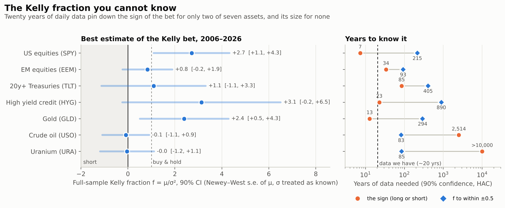
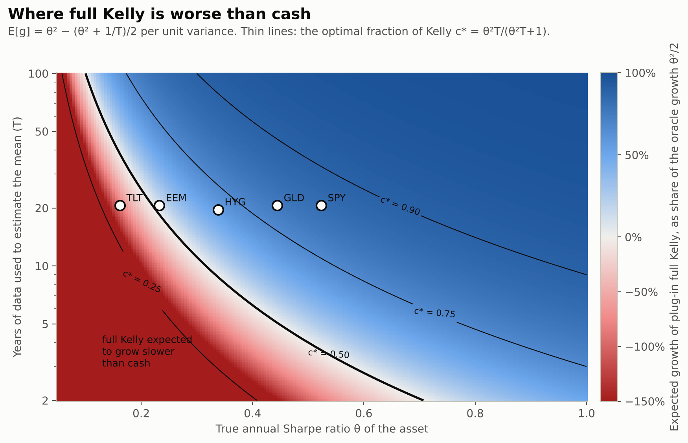
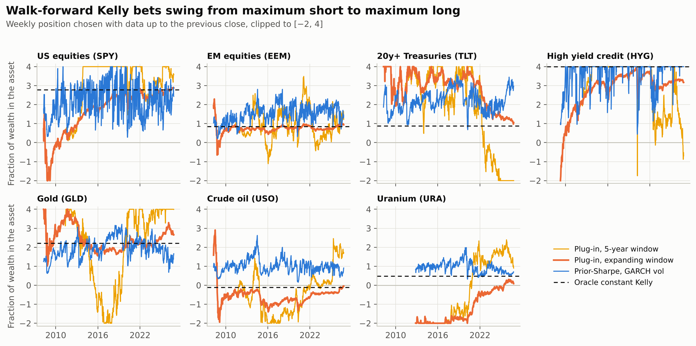
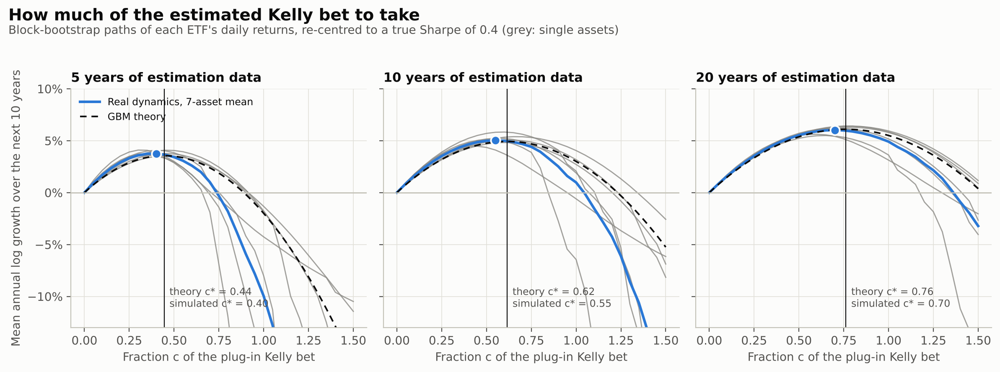
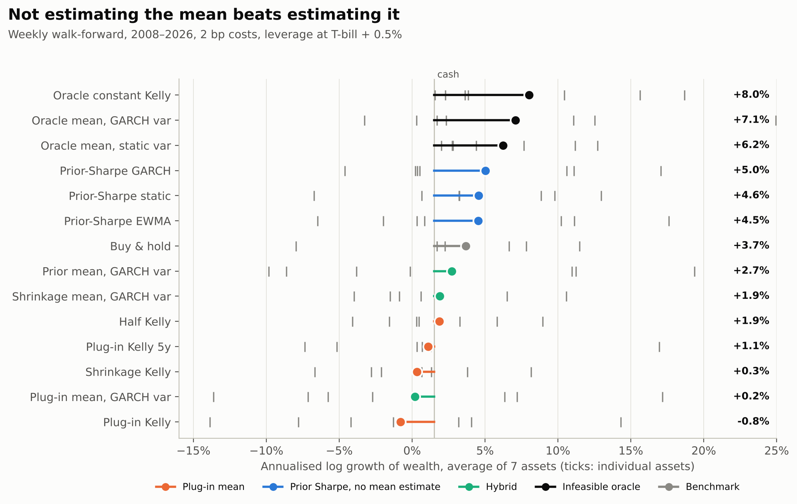
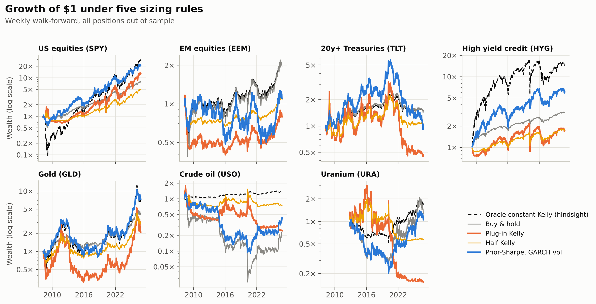
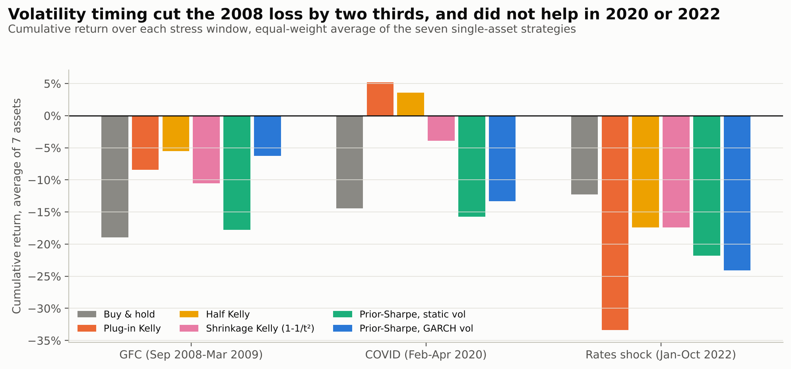
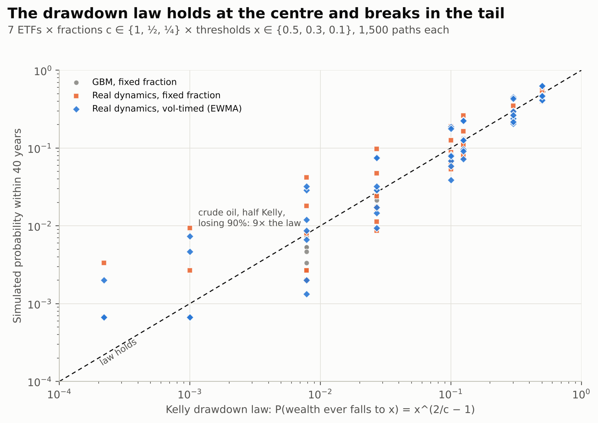

Working paper · Project 07
Estimation risk, volatility timing and the drawdown law in growth-optimal betting, seven asset classes, 2008–2026
Project 07 of 30 Quant Research Projects · Working paper, November 2026

The Kelly criterion says how much to bet to make wealth grow as fast as possible: for an asset with excess drift μ and variance σ², hold the fraction f* = μ/σ². Every Kelly tutorial plugs in a historical mean and stops there. The question here is what happens when you cannot know μ, which is always.
I combine three pieces of evidence. First, closed-form theory for the growth of the plug-in Kelly bet when μ is estimated from T years of data, checked by simulation. Second, a Monte Carlo "Kelly simulator" that replaces the textbook Gaussian world with block-bootstrapped paths of real ETF returns, so fat tails and volatility clustering are kept. Third, a strictly out-of-sample weekly walk-forward of 15 sizing rules on seven cross-asset ETFs (US and emerging equities, long Treasuries, high-yield credit, gold, crude oil and uranium) from 2008 to 2026, with costs, a leverage spread and a position cap. The volatility forecasts come from the best-calibrated simulator in Project 01, so this project also measures what that calibration is worth in money.
Main findings
The Kelly criterion is the most-cited answer to "how much should I bet", from Kelly (1956) and Thorp (1969) to Merton's continuous-time portfolio rule. Its promises are strong: no other strategy grows faster in the long run, and the probability that full Kelly ever halves your wealth is exactly one half. Both promises assume the bettor knows the odds. In financial markets the odds are the expected excess return, and the expected return is the hardest quantity in finance to estimate: its standard error shrinks only with the square root of calendar time, not of the number of observations (Merton, 1980).
That makes the practical question different from the textbook one. It is not "what is the Kelly fraction" but "what is the best bet given that I will estimate the Kelly fraction badly". The literature has answers in pieces: Kan & Zhou (2007) on estimation risk in mean-variance rules, MacLean, Thorp & Ziemba (2010) on fractional Kelly, Moreira & Muir (2017) on volatility-managed portfolios. This project puts the pieces in one experiment, adds real-return simulation and a long out-of-sample test, and asks which part of the Kelly bet can actually be known.
Let excess returns have annual drift μ, variance σ² and Sharpe ratio θ = μ/σ. A constant fraction f grows wealth at g(f) = fμ − f²σ²/2, maximised by f* = μ/σ² with growth θ²/2 per year.
Estimation risk. Estimate μ from T years: μ̂ ~ N(μ, σ²/T). Bet a share c of the plug-in fraction, f = c·μ̂/σ². Then
E[g] = c θ² − c² (θ² + 1/T) / 2, maximised at c* = θ²T / (θ²T + 1).
Full Kelly (c = 1) has E[g] = (θ² − 1/T)/2, which is negative unless θ²T > 1. A Sharpe-0.3 asset needs 11 years of data before full plug-in Kelly is even expected to beat cash; a Sharpe-0.16 asset (long Treasuries) needs 39. The unbiased estimate of θ²T is t² − 1, where t is the t-statistic of the mean, so the feasible optimal share is ĉ = 1 − 1/t² (positive part): bet nothing unless the mean is more than one standard error from zero.
Knowability. The standard error of f̂ is s.e.(μ̂)/σ² = 1/(σ√T) for iid returns; I use the Newey–West standard error of the mean instead, which multiplies this by a factor k between 0.82 and 1.04 across the seven assets. σ is treated as known: its relative sampling error over 20 years is 1–2%, against 50% or more for μ, so it adds almost nothing. Two decision-relevant horizons follow. The sign of the bet is known at 90% confidence once T > (1.645k/θ)². The size is known to within ±0.5 once T > (1.645k / 0.5σ)². The second does not depend on the estimate at all, so it cannot blow up near f = 0.
The drawdown law. Under geometric Brownian motion, betting c·f* makes the probability that wealth ever falls to a fraction x of its starting value equal to x^(2/c − 1): one half for full Kelly and x = ½, one in eight for half Kelly.

Figure 2. Expected growth of full plug-in Kelly as a share of the oracle growth θ²/2. Below the thick line it is expected to grow slower than cash. Dots: the seven ETFs at their full-sample Sharpe ratio and sample length (oil and uranium have Sharpe ≈ 0 and fall off the left edge).
Data. Daily total-return log returns of SPY, EEM, TLT, HYG, GLD, USO and URA from April 2006 (HYG April
2007, URA November 2010) to 20 November 2026, the same file as Project 01. Cash earns the annual average
3-month T-bill rate (data/tbill_3m_annual.csv).
Weekly walk-forward. Rebalance at each of Project 01's weekly forecast origins: 934 weeks per asset (884 for HYG, 703 for URA), 6,257 asset-weeks. Every input uses data up to the previous close. The position is clipped to f ∈ [−2, 4]; borrowing pays the T-bill rate + 0.5%; turnover after intra-week drift costs 2 bp per unit. If a week's loss exceeds wealth the strategy is ruined and stays at zero (it never happened in the baseline).
Inputs. μ̂ and σ̂ from an expanding window of daily excess returns (minimum 500 days), or a rolling 1,260-day window; σ_EWMA with λ = 0.94; σ_GARCH from Project 01's out-of-sample GJR-GARCH-t predictive standard deviation for exactly the week being bet on. The agnostic prior Sharpe ratio θ₀ = 0.3 is the same for every asset and was fixed before any backtest was run.
| Family | Rule | Position f |
|---|---|---|
| Benchmarks | Cash · Buy & hold | 0 · 1 |
| Plug-in | Plug-in Kelly · Plug-in 5y · Half Kelly · Shrinkage Kelly | μ̂/σ̂² · rolling · ½μ̂/σ̂² · (1−1/t²)₊ μ̂/σ̂² |
| Prior Sharpe (no mean estimate) | static · EWMA · GARCH | θ₀/σ̂ · θ₀/σ_EWMA · θ₀/σ_GARCH |
| Hybrids | plug-in / prior / shrinkage mean with GARCH variance | μ̂/σ²_G · θ₀σ̂/σ²_G · ĉμ̂/σ²_G |
| Infeasible oracles | constant Kelly · oracle mean with static or GARCH variance | best constant f in hindsight · μ_full/σ̂² · μ_full/σ²_G |
Pre-registered hypotheses (one-sided tests on weekly log-growth differences, Newey–West standard errors, stationary block-bootstrap 95% intervals, Holm correction across the 28 asset-level tests and separately across the 4 pooled tests):
Simulator. S1 checks the closed forms in a Gaussian world (20,000 draws per cell). S2 draws stationary block-bootstrap paths (mean block 63 days, so volatility clusters survive) of each ETF's daily excess returns, re-centred to a common true Sharpe ratio of 0.4, estimates μ and σ on T ∈ {5, 10, 20} years, then bets c·f̂ for the next 10 years (1,000 paths per asset and T). S3 runs 1,500 40-year paths per asset at c ∈ {1, ½, ¼} of the true Kelly fraction, with and without EWMA volatility timing, against Gaussian paths with the same mean and variance.
| Asset | Years | Sharpe | HAC t | Kelly f̂ | 90% CI (HAC) | P(sign wrong) | Years to know sign | Years to know f ±0.5 |
|---|---|---|---|---|---|---|---|---|
| US equities (SPY) | 20.6 | 0.52 | 2.76 | 2.71 | [1.10, 4.33] | 0.3% | 7 | 215 |
| Gold (GLD) | 20.6 | 0.44 | 2.09 | 2.40 | [0.51, 4.29] | 1.8% | 13 | 294 |
| High yield (HYG) | 19.6 | 0.34 | 1.53 | 3.14 | [−0.24, 6.51] | 6.3% | 23 | 890 |
| EM equities (EEM) | 20.6 | 0.23 | 1.29 | 0.83 | [−0.23, 1.89] | 9.9% | 34 | 93 |
| Treasuries (TLT) | 20.6 | 0.16 | 0.81 | 1.09 | [−1.13, 3.31] | 20.9% | 85 | 405 |
| Crude oil (USO) | 20.6 | −0.03 | −0.15 | −0.09 | [−1.09, 0.91] | 44.1% | 2,514 | 83 |
| Uranium (URA) | 16.0 | −0.01 | −0.05 | −0.04 | [−1.19, 1.12] | 47.9% | 15,736 | 85 |
Newey–West standard errors of the mean of daily excess returns (Bartlett kernel, 9 lags); σ treated as known. "Years to know" assumes the point estimate stays where it is. For oil and uranium the sign horizon is huge because the estimated Sharpe ratio is close to zero, which is the honest answer: if the true edge is near zero, no sample will tell you which way to bet. The ±0.5 horizon has no such problem and is long for every asset, longest for low-volatility assets, where a given error in μ is divided by a small σ².
The interval for high-yield credit runs from a small short to 6.5× leverage. Even the best-measured asset, the S&P 500, has an interval from 1.1× to 4.3×, and the growth of those two bets differs by more than the equity premium.
In real time it is worse, because the estimate is updated as data arrive (Figure 3). The expanding-window plug-in bet on SPY sat at the −2 short limit through early 2009, at the bottom of the market. On uranium it pointed the wrong way 90% of the time. The 1 − 1/t² rule set the bet to zero in 86% of weeks for EEM and 76% for oil, which is the honest answer: the data do not say which way to bet.

In the Gaussian world, the closed forms match simulation within Monte Carlo noise (largest error
0.07 oracle-growth units for θ ≥ 0.3, in the 3-year cells where f̂ is wildest; see results/sim_gbm_grid.csv). With θ = 0.3 and 10 years of data, full plug-in
Kelly is expected to grow 11% slower than cash in units of the oracle growth, and a single 10-year path
ends below cash 47% of the time.
On real return paths (Figure 6) the shape is the same, but two things change. The best share is lower than theory, and the right side of the curve falls much faster: with 5 years of data, betting the full estimated fraction loses 10% a year on average, against −2% in theory, because fat tails and volatility clusters punish leverage that the quadratic approximation does not see. Under-betting is cheap; over-betting is expensive, and more expensive than the Gaussian model says.
| Estimation window | c* theory | c* simulated | Growth at simulated c* | Growth of full plug-in |
|---|---|---|---|---|
| 5 years | 0.44 | 0.40 | +3.8% | −10.0% |
| 10 years | 0.62 | 0.55 | +5.0% | +1.0% |
| 20 years | 0.76 | 0.70 | +6.0% | +4.9% |
True Sharpe 0.4 for every asset; oracle growth θ²/2 = 8.0% a year.


| Rule | Pooled growth | Share of oracle excess growth | Mean f | Avg max drawdown |
|---|---|---|---|---|
| Oracle constant Kelly (hindsight) | +8.0% | 100% | 1.59 | 58% |
| Oracle mean, GARCH variance (infeasible) | +7.1% | 86% | 1.91 | 62% |
| Oracle mean, static variance (infeasible) | +6.2% | 73% | 1.37 | 54% |
| Prior-Sharpe, GARCH vol | +5.0% | 54% | 1.91 | 71% |
| Prior-Sharpe, static vol | +4.6% | 47% | 1.41 | 69% |
| Prior-Sharpe, EWMA vol | +4.5% | 46% | 1.99 | 73% |
| Buy & hold | +3.7% | 33% | 1.00 | 58% |
| Half Kelly | +1.9% | 6% | 0.63 | 52% |
| Cash | +1.5% | 0% | 0 | 0% |
| Plug-in Kelly, 5-year window | +1.1% | −6% | 1.39 | 83% |
| Shrinkage Kelly (1 − 1/t²) | +0.3% | −18% | 0.57 | 52% |
| Plug-in Kelly | −0.8% | −36% | 1.25 | 78% |
Pooled growth is the equal-weight average of the seven assets' annualised log growth. Full per-asset
numbers in results/summary_by_asset.csv.
The ranking has a clear structure. Every rule that uses an estimated asset mean is near or below cash. Every rule that ignores it and only scales by volatility is above buy-and-hold. The infeasible rows show that the mean is valuable when known: the oracle mean adds 1.6 points to the static prior rule. The problem is not that the mean does not matter, but that its estimate is mostly noise, and Kelly converts noise into leverage.
Pre-registered tests (annualised growth difference, bootstrap 95% CI, Holm-adjusted p):
| Hypothesis | Pooled difference | 95% CI | NW t | p (one-sided) | p (Holm) | Assets in the hypothesised direction |
|---|---|---|---|---|---|---|
| H2 plug-in < buy & hold | −6.9 pts | [−17.3, +2.9] | −1.34 | 0.09 | 0.27 | 5 of 7 |
| H3 prior-Sharpe GARCH > plug-in | +9.0 pts | [−1.1, +19.5] | 1.74 | 0.04 | 0.16 | 7 of 7 |
| H4 GARCH timing > static | +1.2 pts | [−1.8, +4.6] | 0.73 | 0.23 | 0.46 | 4 of 7 |
| H5 shrinkage > plug-in | +1.8 pts | [−2.9, +6.8] | 0.73 | 0.23 | 0.46 | 4 of 7 |
"Pooled" averages the weekly growth of whichever assets are live each week, which weights the early years (fewer assets) more heavily than the per-asset table; the simple average of the seven per-asset H3 differences is +5.8 points.
None of the pre-registered hypotheses is significant after multiple-testing correction, and I report that as a result, not a footnote. H3 has the right sign on every asset, with a sign test p of 1/128, but the per-asset growth differences are so noisy that 18 years cannot separate them at conventional levels. That is finding 1 again, one level up: if the mean of one asset's return cannot be known in 20 years, the mean of the difference between two leveraged strategies cannot either.

Decomposing the gap. Holding the variance input fixed and changing only the mean input:
| Mean input → | Oracle (infeasible) | Prior Sharpe 0.3 | Estimated |
|---|---|---|---|
| Static variance | +6.2% | +4.6% | −0.8% |
| GARCH variance, Kelly 1/σ² scaling | +7.1% | +2.7% | +0.2% |
| GARCH variance, constant-Sharpe 1/σ scaling | – | +5.0% | – |
Two lessons. The mean input is worth 7 points a year between the best and the worst choice; the variance input is worth about 1. And scaling by 1/σ² (the literal Kelly rule with a fixed mean) is too aggressive when the volatility forecast is low: it pushes leverage to the cap in calm markets just before the shock. Scaling by 1/σ, which assumes a constant Sharpe ratio rather than a constant mean, kept the timing gains and avoided that.
Stress windows. Volatility timing cut the average loss in the 2008 crisis from 17.8% (static prior) to 6.2%. It did not help in the COVID crash (−13.3% against −15.7%), which arrived faster than a weekly volatility forecast can react, exactly as Project 01 found for its forecast intervals. In the 2022 rates shock it was slightly worse (−24.1% against −21.8%), because volatility in Treasuries rose gradually while prices fell steadily. Plug-in Kelly lost 33% in 2022: it had learned from 14 years of falling yields that long Treasuries deserved 2–4× leverage.


| Fraction of true Kelly | Wealth falls to | Law | GBM, 40 years | Real dynamics | Real, vol-timed |
|---|---|---|---|---|---|
| Full | 50% | 50.0% | 46.7% | 47.7% | 49.7% |
| Full | 10% | 10.0% | 7.8% | 9.5% | 9.9% |
| Half | 50% | 12.5% | 11.7% | 12.9% | 13.8% |
| Half | 30% | 2.7% | 2.4% | 3.2% | 3.6% |
| Half | 10% | 0.10% | 0.03% | 0.18% | 0.21% |
| Quarter | 50% | 0.78% | 0.60% | 1.11% | 1.30% |
Averages over the seven assets, 1,500 paths each, daily rebalancing.
On average the law survives fat tails and clustering surprisingly well, because daily rebalancing turns a large shock into many small ones. The failure is in the tail and in specific assets. Deep losses at fractional Kelly happen 1.2–1.8× more often than the law says on average (and up to 6× more often than in equivalent Gaussian paths), and the excess is concentrated where returns jump: at half Kelly, crude oil lost 90% of its starting wealth with probability 0.93% (law: 0.10%), and high-yield credit fell to 30% with probability 4.7% (law: 2.7%). For oil, volatility timing brought the probability back to 0.07%. For high yield and uranium it made the tail worse, because constant-Sharpe scaling holds 40% more average leverage than the fixed fraction.
results/robustness.csv). It is not robust to an asset with a negative true Sharpe: it lost
4.6% a year on crude oil, where contango made the ETF a structurally bad bet.Points I checked against my own results before publishing:
results/knowability.csv (years_rel_50) only.The Kelly criterion is right about what to maximise and wrong about what you know. Its input is the expected return, which twenty years of data cannot pin down for most assets, and its output turns estimation noise directly into leverage. In this sample, a bettor who refused to estimate any asset's mean, assumed the same modest Sharpe ratio everywhere and spent their modelling effort on forecasting volatility, grew wealth faster than the plug-in Kelly bettor on every asset, and kept 54% of what perfect hindsight would have earned. The part of Kelly you can know is the denominator.
pip install -r requirements.txt
./run_all.sh # tests, backtest, simulator, statistics, figures: about 2 minutes
| Script | Output |
|---|---|
src/kelly.py |
theory, drawdown law, bootstrap, Newey–West, Holm |
src/backtest.py |
results/weekly.csv.gz, results/inputs.csv.gz |
src/simulate.py |
results/sim_gbm_grid.csv, sim_real_multiplier.csv, sim_drawdown_law.csv |
src/evaluate.py |
summary_*.csv, tests.csv, stress_windows.csv, knowability.csv, plugin_instability.csv, robustness.csv |
src/figures.py |
figures/*.png |
tests/test_kelly.py |
8 unit tests: closed forms, drawdown law, no look-ahead, accounting |
All seeds are fixed. data/gjr_garch_t_weekly_forecasts_from_project01.csv is the GJR-GARCH-t, 5-day
subset of Project 01's results/forecasts.csv.gz (columns asset, origin, t, y, sd, mean).
Not investment advice. Code MIT, text and figures CC BY 4.0.